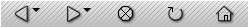
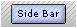
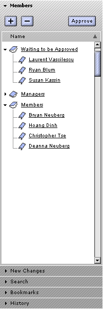
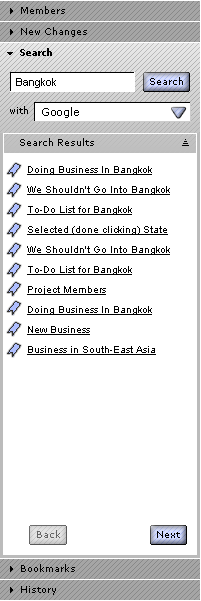
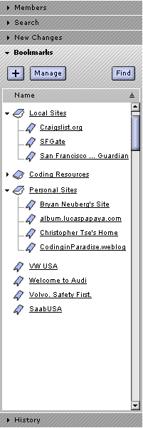
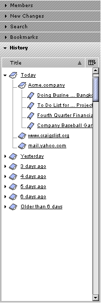

| | |
Table of Contents | Last | Next
Main Portions of Paper Airplane
View Mode
During View Mode, with everything open, the Paper Airplane application appears as follows.
Main Portions of Paper Airplane in View Mode
Each area is broken down below.
View Mode - Window Header
The Window Header displays the name of the current page, the name of the application (Paper Airplane), and the current version of Paper Airplane being run (1.0).
View Mode - Pull-Down Menus
There are several pull-down menus available: File, Edit, View, Bookmarks, Tools, and Help. File contains such functions as creating, printing, saving, and working offline. Edit contains functions for cutting, copying, pasting, selecting, and finding & replacing text. View contains functions for selectively viewing such items as the Sidebar, the Download Manager, History, Bookmarks, etc, and for changing the page's text size. Bookmarks contains all of the user's bookmarks and provides functions for adding and managing these bookmarks. Tools provides options for managing forms, cookies, etc., for joining and unjoining a site, signing in and out, and more. Help provides access to an integrated help system.

View Mode - Tool Bar and Throbber
The Tool Bar provides easy, descriptive access to common functions used during browsing.
The New Site icon invokes the New Site Wizard to begin creating a new Two Way Web Site. The New Page icon creates a new page on the given web site. The Edit Page icon starts an editing session on the current page by opening a new window that contains the Paper Airplane editor, with the current page loaded in this editor. Both the New Page and Edit Page icons are disabled if the current user is not a Manager or a Member of the current site; both icons also shift the browser into Edit Mode. The Members icon opens the Sidebar and shows the Members panel. The New Changes icon opens the Sidebar and shows the New Changes panel. If the user is not yet a member of the current site, then the next icon shown is Join Site; pressing this button invokes the Join Site Wizard. If the user is already a member of the current site, then this icon says Unjoin Site. A Print button is also available on the Tools Bar that will print the current page. This button also has a small arrow that when pressed reveals further printing options. The Paper Airplane browser throbber is also in the Tool Bar and pulses when network activity is occuring, such as saving a page or retrieving a page.
If the current web-site does not support the Member, New Changes, or Join/Unjoin technologies, such as at older World Wide Web sites, then these icons disappear.

View Mode - Browser Bar
The Browser Bar provides access to common browsing commands.
It consists of Back, Forward, Stop, Reload, and Home buttons. The Back and Forward buttons also have small arrows that when pressed reveal the last few pages visited or pages available for moving forward, respectively. The Home buttons either takes the user to the pre-defined default The Two Way Web Directory or to any page they have defined through the Program Settings... dialog.

View Mode - Address Bar
Users can enter Two Way Web Site addresses or older World Wide Web addresses, such as go://www.Acme.company or http://www.cnn.com into the Address Bar.
View Mode - Account Info and Sign Off Area
This area provides quick access for users to see what username they are signed in as and a button to sign off.
View Mode - Page Info Bar
The Page Info Bar provides a cookie trail and the name of the current page. It disappears at sites that do not support the cookie trail functionality.
View Mode - Tabbed Browsing Bar
The Tabbed Browsing Bar appears if a page has been opened into a browsing tab. This bar has an icon on the far-left which when pressed creates a new, blank tab. This bar disappears if there is only one tab.
| View Mode - Sidebar | View Mode - Sidebar Slider |  View Mode - Sidebar Button |
The Sidebar holds panels to help the user with various tasks. There are two kinds of panels in the sidebar: Site Panels that help with interacting with the current Two Way Web Site, such as a Members Panel or a New Changes Panel, and Utility Panels that are used during browsing for more generalized tasks, such as checking your bookmarks with the Bookmarks Panel or your browsing history with the History Panel. See below for specifics on what panels are in the Sidebar by default.
Hiding and showing the sidebar can be done in a variety of ways. Either by selecting View > Sidebar, pressing F9, pressing the Sidebar button, or dragging the Sidebar Slider.
|  View Mode - Members Panel in Sidebar |
View Mode - New Changes Panel in Sidebar |  View Mode - Search Panel in Sidebar |  View Mode - Bookmarks Panel in Sidebar |  View Mode - History Panel in Sidebar |
The Sidebar has five panels by default: Members, New Changes, Search, Bookmarks, and History.
The Members panel provides a quick location to view, add, remove, and approve members. It disappears if a given site does not support this functionality. If the current user is not a Member or Manager of the site, then it is disabled rather than disappearing.
The New Changes panel provides an easy way to track new changes that have occurred on a Two Way Web Site. It disappears if the current site does not support this functionality.
The Search panel can be used to enter search terms for search engines on the older World Wide Web. The search results returned do not include Two Way Web Sites on the Two Way Web; searching is not currently supported for the peer-to-peer Two Way Web.
The Bookmarks panel provides easy access to your bookmarks.
The History panel can be used to track where you have surfed on the web.
View Mode - Content Area
The Content Viewing area is straightforward. It simply displays the contents of the current web page.
View Mode - Status Bar
The Status Bar consists of the following status portions during view mode: